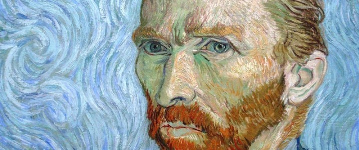

¿Qué soy yo a los ojos de la mayoría de la gente? Un nadie o una rareza o una persona desagradable, alguien que no tiene y no tendrá una posición en la sociedad, en resumen estoy un poco más bajo que lo más bajo. Muy bien, supoiniendo que todo es realmente así, entonces a través de mi trabajo me gustaría mostrar lo que hay en el corazón de un raro, de un don nadie.
— Vincent
Vincent van Gogh es uno de los pintores más queridos del mundo, por lo que nos transmite su obra y por lo que conocemos de su vida. Personalmente, es una de mis mayores inspiraciones y sé que es así para muchxs artistas y personas creativas. La sensibilidad por la vida que transmite con sus palabras y sus pinturas es inmensa y es algo que estudiaré y atesoraré por el resto de mi vida. Saber lo que sabemos de él, saber que no todo fueron tristezas, pero que su vida inevitablemente terminó y él no pudo ver el impacto que su obra en todo el mundo es algo agridulce, pero aún así me llena de felicidad ver a tantas personas inspiradas por Vincent y que exista gente que se dedica a hablar de él me alegra muchísimo y lo agradezco porque así fue como comenzó mi interés y amor por su arte.
A continuación están algunos extractos de sus cartas hacia Theo y de páginas de su diario, otras de las cosas que le admiro mucho y que me motiva a escribir también.

Tengo la naturaleza, el arte y la poesía y si eso no es suficiente, ¿qué es suficiente?, ¿cómo he de ser útil?, ¿de qué servicio puedo hacer? Hay algo dentro de mí, ¿qué puede ser? Ojalá me aceparan como soy.
¿Qué sería de la vida si no tuviéramos el valor de intentar nada?
Cuanto más lo pienso, más me doy cuenta que no hay nada más artístico que amar a los demás. Es bueno amar muchas cosas porque ahí está la verdadera fuerza y quien ama mucho, hace mucho y puede lograr mucho y lo que se hace con amor, está bien hecho.
Por mi parte, no sé nada con certeza, mas que la vista de las estrellas me hace soñar. Sueño mi cuadro y pinto mi sueño.
La poesia nos rodea por todas partes, pero plasmarla en un papel, lamentablemente no es tan fácil como mirarla.
La normalidad es un camino pavimentado, es como caminar pero en él no crecer flores.
Su vida
Vincent van Gogh, por quien el color era el símbolo principal de expresión, nació el 30 de marzo de 1853 en Groot-Zundert de Holanda. El hijo de un pastor, criado en una atmósfera religiosa y refinada, Vincent era muy emocional y no tenía confianza en sí mismo. Entre 1860 y 1880, cuando decidió finalmente ser artista, Van Gogh había tenido dos amores inadecuados y infelices y había trabajado sin éxito como empleado en una librería, vendedor de arte, y predicador en Le Borinage (una región aburrida de minera en Bélgica), donde fue despedido por “exceso de celo.”
Se quedó en Bélgica a estudiar el arte, dedicado para dar felicidad creando belleza. Las obras de este período temprano en Holanda son pinturas de género muy iluminadas y de tonos sombríos de las que la más famosa es Los comedores de papas (1885). En ese año Van Gogh fue a Antwerp donde descubrió las obras de Rubens y compró muchos grabados japoneses.
En 1886 fue a París para unirse con su hermano Theo, el director de la Galería de Goupil. En París, Van Gogh estudió con Cormon, conoció inevitablemente a Pissarro, Monet, y Gauguin, y empezó a dar más luz a su paleta muy oscura y pintar en las brochadas cortas de los impresionistas. Su temperamento nervioso le hizo un compañero difícil y las discusiones que duraron toda la noche, en combinación con pintando todo el día, afectaron a su salud.
Decidió ir al sur de Arles donde tuvo la esperanza de abrir una escuela de arte con sus amigos. Gauguin hizo el viaje a Arles pero el resultado fue un desastre. En el fin de 1888, después de un incidente, Gauguin tuvo que salir de Arles. Van Gogh le persiguió con una cuchilla y fue parado por Gauguin, pero se cortó una parte de su propia oreja. La vida de Van Gogh empezó a alternar entre los ataques de locura y la lucidez. Van Gogh fue enviado al manicomio en Saint-Rémy para su tratamiento.
En mayo de 1890, sentía mucho mejor y fue a vivir en Auvers-su-Oise bajo el ojo atento de Doctor Gachet. Murio dos meses después cuando se disparó a sí mismo “por el bien de todo.” Durante su carrera breve vendió solamente una pintura. Las obras más finas de Van Gogh fueron producidas en menos de tres años por una técnica que crecía más y más apasionada en la brochada, en color simbólico e intenso, en tensión superficial, y en el movimiento y la vibración de forma y línea. La fusión inimitable de forma y contenido de Van Gogh es poderosa, dramática, rítmica, imaginativa y emocional. El artista estaba absorto completamente en el esfuerzo para explicar su lucha contra su locura o en la comprensión de la esencia espiritual de hombre y naturaleza.
Su obra


Museos
¿Dónde encontrar la obra de van Gogh?